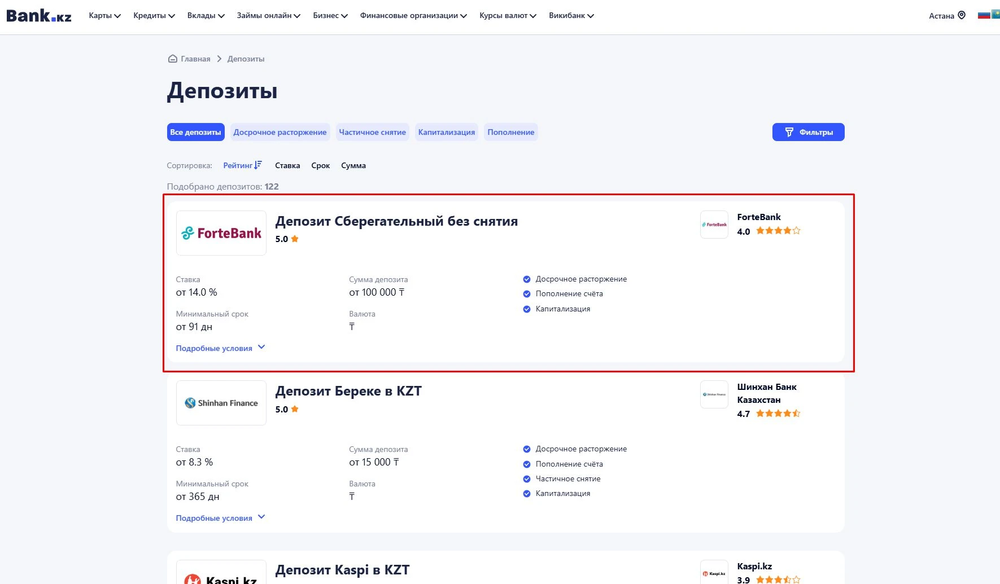
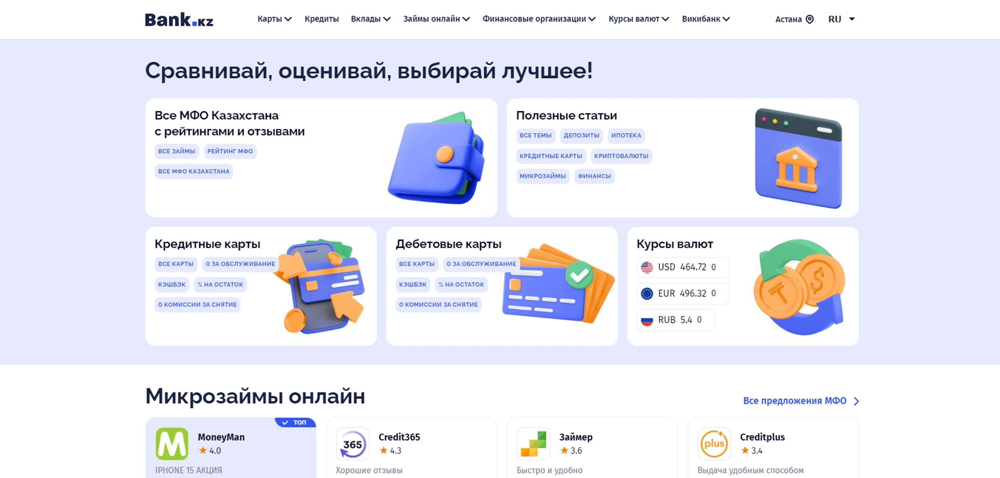

Ставка и доступ к деньгам
В разделе депозитов посетитель выбирает валюту и тип вклада. При сравнении важны и ставка, и условия доступа к деньгам. На сохранённом экране видно, как эти характеристики представлены в каталоге.




Веду продукт Bank.kz. Один из основных сценариев финансовой витрины — помочь посетителю сопоставить условия банков.

В разделе депозитов посетитель выбирает валюту и тип вклада. При сравнении важны и ставка, и условия доступа к деньгам. На сохранённом экране видно, как эти характеристики представлены в каталоге.

